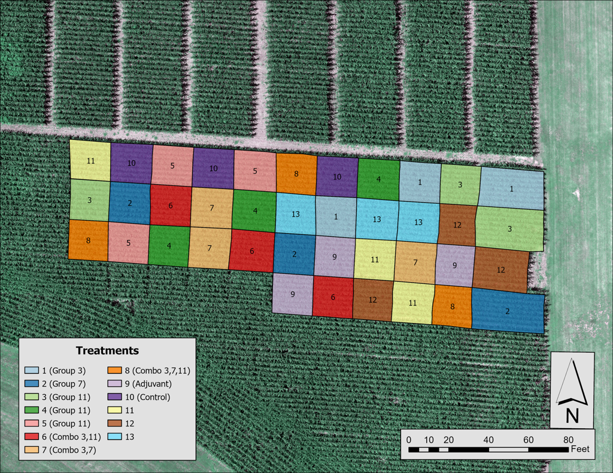
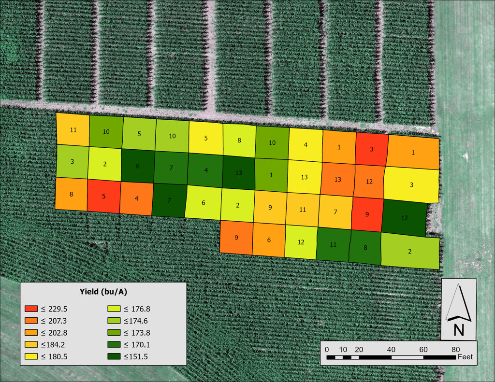
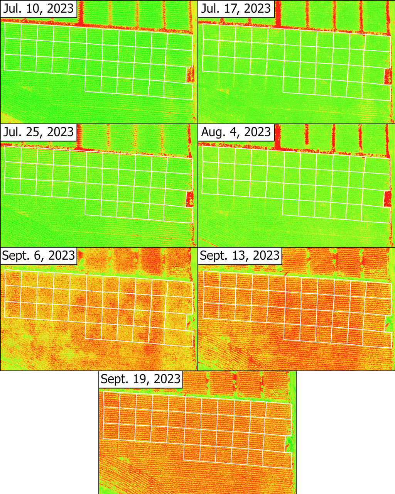
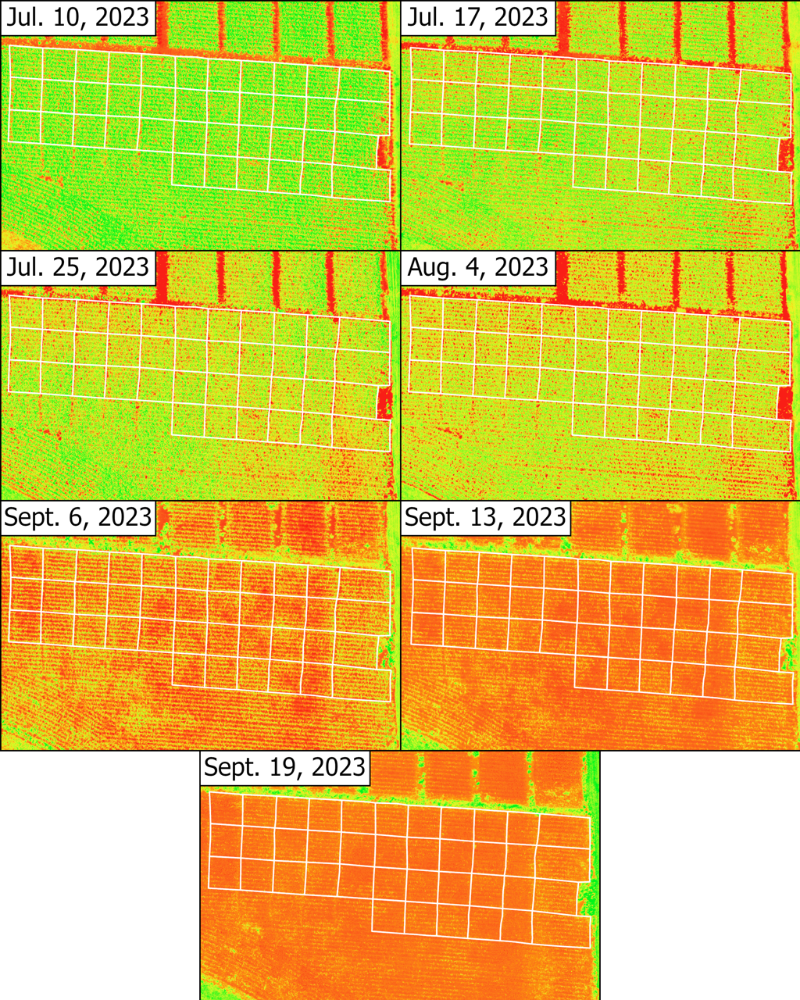
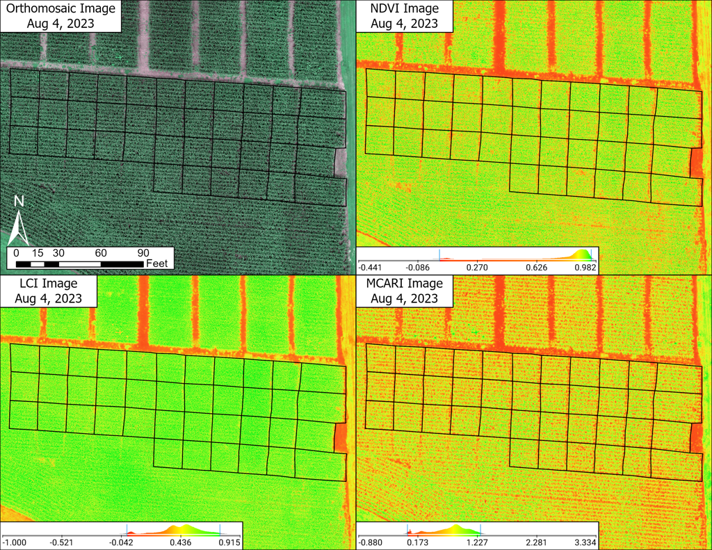

Project
Precision Agriculture: Assessing Fungicide Applications and Corn Yield with UAS and Remote Sensing
Abstract
Corn is one of the most important staple crops in the world. Worldwide, farmers lose 10 to 23 percent of their yields due to fungal infections each year. Fungi are harmful to crops by causing diseases which can lead to a loss in crop yield and quality. Unmanned Aerial Systems (UAS) in combination with multispectral information, enables growers to collect imagery of fields to monitor the overall health of crops throughout their growth cycle. UAS imagery is collected at very fine spatial resolutions and provides opportunities for deeper understanding of crop health using vegetation indices. The goal of this study was to assess the most effective fungicide applications to increase yields and determine the applicability of remote sensing in precision agriculture of corn. We examined the growth cycle of corn with various fungicides applied using multispectral UAS imagery at the Murray State Farm. Raw imagery was collected weekly throughout summer 2023 and then processed using Pix4D Fields. Vegetation indices were further processed for statistical analysis to interpret relationships between Normalized Difference Vegetation Index (NDVI), Leaf Chlorophyll Index (LCI), Modified Chlorophyll Absorption Index (MCARI) and yield measurements. Out of the 13 total treatments, treatment 11 was expected to perform best at mitigating fungal diseases among corn. The study demonstrated the effectiveness of UAS imagery and derived vegetation indices in investigating crop health at a very fine spatial resolution.
Project Details
Maps and Figures




